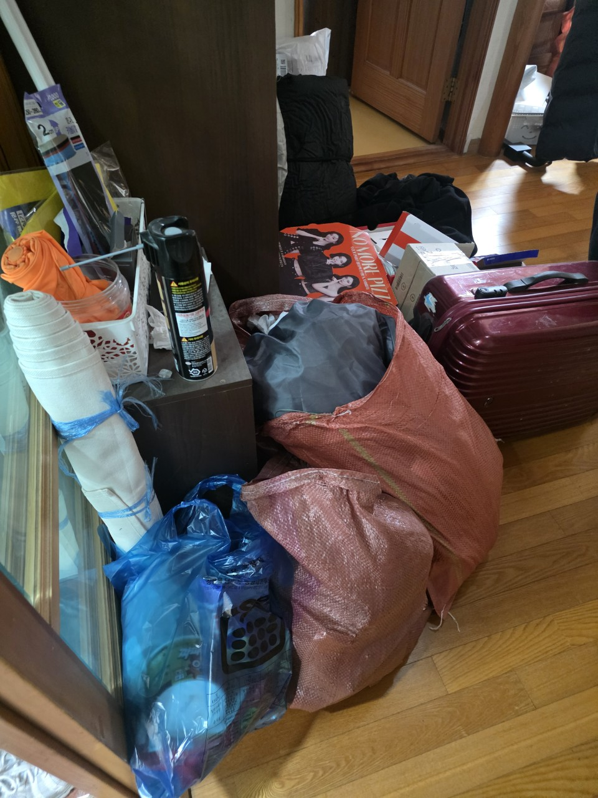

시작가는 같습니다. 시장 골목 손운반과 토평 창고 상차는 현장 가감이 다릅니다.
수택권 · 시장·토평·한강
수택·토평 유품정리,
수택·토평 유품정리,
시장골목·공장권 상담
수택권은 구리전통시장이 있는 수택1·2동과, 토평동을 포함한 수택3동으로 나뉩니다. 시장 골목은 주차와 손운반이, 토평은 창고·공장형 짐이 핵심입니다. 한 권역처럼 보여도 작업 장비가 다릅니다. 구리 올바른정리는 수택권 유품정리를 주거 기준으로, 적치·폐업은 쓰레기집청소와 폐업폐기물로 나눠 받습니다.
SERVICE
구리시 수택권에서 맡기는 작업
수택권은 시장 상가 잔짐과 토평 장기 방치 주택이 함께 들어옵니다.
유품정리
수택 주거 유품 분류
시장 위층 주거는 공간이 좁아 유품이 부엌까지 퍼져 있습니다. 제사 그릇과 생활용품을 가족이 먼저 나눠 주시면 당일 비우기가 쉽습니다. 수택3동 주택은 창고 유품까지 목록에 넣습니다.
쓰레기집청소
시장골목·토평 상차
수택1·2동은 장날에 골목이 막혀 상차 시간을 피합니다. 수택3동 토평은 공장 진입로를 쓸 수 있는지 먼저 봅니다. 적치 주택은 쓰레기집청소로 방 단위 제거를 합니다.
PRICE
수택권 비용이 달라지는 지점
수택권은 골목형과 공장형 중 어디에 가까운지가 견적 공식입니다.
* 부가세 별도 · 시작가이며 현장 확인 후 확정
유품정리
45만원 부터~
시장 위 주거 유품 45만원부터, 토평 창고 포함 시 공간을 추가합니다.
고독사 특수청소
80만원 부터~
환기가 어려운 시장 건물 오염은 80만원부터입니다.
쓰레기집·일반폐기물
30만원 부터~
골목 손운반이면 30만원 시작가에 순환 횟수가 더해집니다.
GUIDE
수택권에서 유품정리와 쓰레기집청소를 어떻게 나누나요?
남길 물건이 있는 주거는 유품정리, 상가·적치·공실은 반출형으로 시작합니다.
구리전통시장 인근 유품정리는 왜 시간이 따로인가요?
수택1동 일대는 장날과 하차 차량이 겹칩니다. 유품 분류는 실내에서 먼저 하고, 상차는 장 시작 전이나 저녁에 붙입니다. 이 순서를 무시하면 작업이 중간에 멈춥니다.
토평동 쓰레기집청소는 가정과 무엇이 다른가요?
수택3동에 속하는 토평동은 주택과 작업장이 섞여 있습니다. 생활폐기물 외에 집기, 자재, 파렛트가 나옵니다. 품목을 나눠야 처리 경로가 달라져, 상담 때 작업장인지 주거인지를 꼭 말합니다.
수택2동처럼 면적이 작은 동은 비용이 싼가요?
면적과 비용은 비례하지 않습니다. 수택2동은 밀도가 높아 계단 운반과 대기 시간이 더 나올 수 있습니다. 시작가는 다른 동과 같습니다.
한강 가까운 토평 주택도 방문하나요?
방문합니다. 수택3동 한강 방향은 습기로 장판·벽지가 상한 빈집이 있어, 반출 후 특수청소가 필요한지 같이 봅니다.
수택권 견적에 필요한 한 가지는?
시장 골목인지, 토평 진입로인지입니다. 사진에 도로가 나오면 차량 크기를 바로 정합니다.
PROCESS
수택권 작업 순서
수택권은 장날·공장 출입 시간을 달력에 먼저 표시합니다.
STEP 01
권역 유형 구분시장골목형인지 토평 공장·주택형인지 정합니다.
STEP 02
실내 분류유품과 집기를 섞지 않고 방·점포 단위로 포장합니다.
STEP 03
시간대 상차통행이 적은 시간에 차량을 붙여 한 번에 실습니다.



FAQ
수택권에서 자주 묻는 질문
검색·AI 답변에 쓰일 수 있도록 이 지역 기준으로 짧게 정리했습니다.
실내 작업은 가능하고 상차는 피하는 것이 좋습니다. 날짜를 알려주시면 장날을 피해 잡습니다.
수택3동 주소면 이 권역으로 받습니다. 집기량은 폐업폐기물로 별도 안내합니다.
45만원부터입니다. 시장 위층 계단 운반이 길면 인원이 추가됩니다.